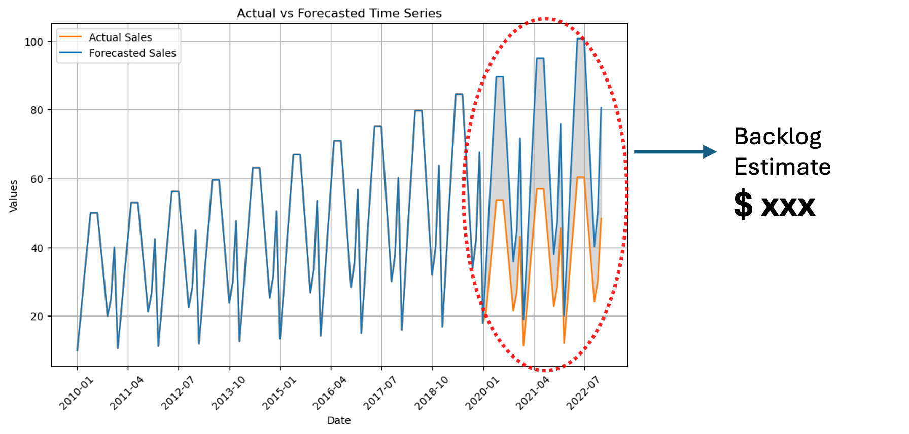

COVID-19 Pandemic-Driven Product Backlog Assessment - A Time Series Forecasting Approach
Merck USNote: Exact sales figures could not be reported as confidential to Merck US
Tools and methods: Time Series Forecasting, Linear Regression, Hierarchial Clustering, SQL
 About the Project:
About the Project:
- Numerous elective surgeries were postponed due to the onset of the COVID-19 pandemic.
- Consequently, sales of the considered project, an anesthesia reversal agent, declined.
- A significant backlog emerged in the sales of the product.
- The objective at hand was to assess the backlog generated in the sale of the product from mid-2020 to mid-2022.
- Additionally, we identified the top 20 target hospitals in the country to address this backlog.
- Firstly, time series forecasting was performed to forecast the sales of the product HAD COVID NOT HAPPENED.
- Multiple time series forecasting models were used- including ARIMA, SARIMAX, Holt Winter's exponential smoothing, fbProphet.
- fbProphet performed the best and hence the forecast was considered as final.
- Now the difference between the forecasted and actual sales was considered as Backlog.
- Following figures make the methodology clearer.

Target Hospitals Identification:
- Hospitals were clustered into 3 major clusters - Low, Medium and High Sales.
- 100+ hospital specific features were available in the data - including # beds, # rooms, # surgeons, # anesthesiologists, # nurses, revenue etc.
- A regression model was built in each of the 3 clusters after performing feature selection for each cluster (from the above features).
- As per the selected features, the model had a estimate of the expected sales for each hospital.
- The hospitals were ranked in the descending order of difference in expected and actual sales.
- Finally, top 20 hospitals (across all 3 clusters) were identified as targets- since huge sales opportunity was observed